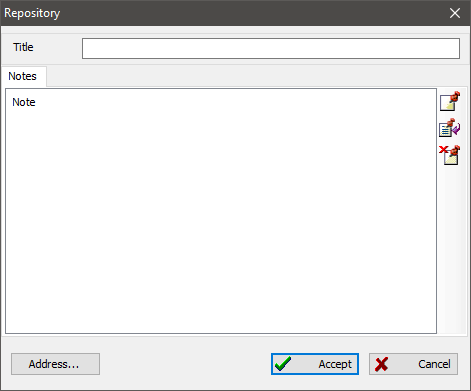

Repository records combine sources located at one storage place. A repository is either a state archive, private archive institution, a private collection, or some other document storage.
Each repository has a name, storage unit list, an address, and other contact information. You can also add a text note about hours of service and other information.

There is a uniting table on the "Repositories" tab of the main working window, which includes all repositories available in the database. A repository summary to the right of the table shows all information about the selected repository and sources that, according to the database, are stored in the selected repository.